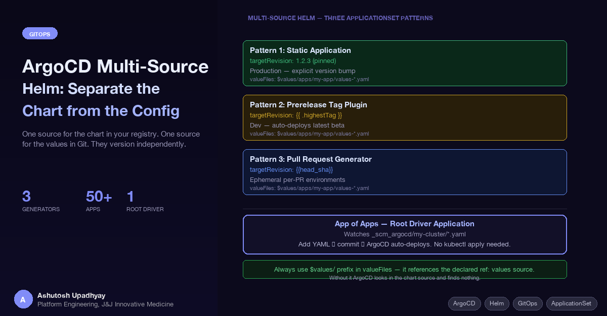

One source for the chart in your registry. One source for the values in Git. They version independently — and that changes everything about how you manage environments.
Managing Helm deployments with ArgoCD starts simple and quietly becomes a versioning problem. The chart and the configuration live in the same place. Every environment update touches the same files as chart code changes. CI pipelines and ops workflows contend for the same repository. At some point you realize you've coupled two things that had no reason to be coupled.
ArgoCD's multi-source feature solves this. The chart lives in a Helm registry — OCI or HTTP. The values live in a GitOps configuration repository. They evolve on independent timelines, versioned separately, bumped by different systems. This post covers the three patterns this enables and the operational conventions that make them work in practice.
The conventional ArgoCD pattern stores the Helm chart and its values in the same repository — or at minimum the same ArgoCD Application manifest. This works until you have more than one environment. Then you end up with one of two uncomfortable choices:
values-dev.yaml, values-prod.yaml alongside chart code. Ops changes and application code changes land in the same pull requests. The git history becomes unreadable.In both cases, the chart version and the environment configuration are entangled. A chart update requires touching the configuration repo. A configuration change carries implicit risk of also picking up a chart version change. The coupling isn't necessary — it's a consequence of the tooling forcing everything into one source.
Multi-source removes the constraint. The chart comes from wherever charts live — your registry, a public Helm repo, OCI. The values come from your GitOps config repo. ArgoCD renders them together at sync time. Neither source knows about the other's versioning.
ref: values PatternThe mechanism is a ref label on a source in the sources array. A source with a ref is not rendered or deployed — it's a carrier. Other sources in the same Application can reference files from it using the $ref-name/ prefix in their valueFiles list.
apiVersion: argoproj.io/v1alpha1
kind: Application
metadata:
name: my-app-prod
namespace: argocd
spec:
project: my-project
destination:
namespace: my-app-prod
name: in-cluster
sources:
- repoURL: 'https://registry.example.com/helm-charts'
chart: my-app
targetRevision: 2.1.0
helm:
valueFiles:
- $values/apps/my-app/values-prod.yaml
- repoURL: 'https://git.example.com/scm/myteam/k8s-config.git'
targetRevision: main
ref: values
syncPolicy:
automated:
prune: true
syncOptions:
- CreateNamespace=trueThe second source — the Git repo — is declared with ref: values. It is never deployed. Its files become available to the first source as $values/path/to/file. The chart renders with the values from the config repo at sync time.
Always use the $values/ prefix in valueFiles. Without it, ArgoCD looks for the values file inside the chart source — which doesn't have it. The resulting error ("file not found") doesn't always make the cause obvious. The prefix is what tells ArgoCD which source to pull the file from.
Bumping the chart is a one-line change to targetRevision in the Application manifest. Bumping the environment config is a commit to the values Git repo. Neither affects the other. CI publishes chart releases; ops manages configuration changes. They're decoupled because they should be.
For production environments, you want explicit control over every version transition. The chart version is pinned. Nothing auto-updates. A deliberate commit to the ArgoCD manifests repo is required to move forward.
apiVersion: argoproj.io/v1alpha1
kind: Application
metadata:
name: my-app-prod
namespace: argocd
spec:
project: my-project
destination:
namespace: my-app-prod
name: in-cluster
sources:
- repoURL: 'https://registry.example.com/helm-charts'
chart: my-app
targetRevision: 2.1.0 # pinned — never auto-updated
helm:
valueFiles:
- $values/apps/my-app/values-prod.yaml
- repoURL: 'https://git.example.com/scm/myteam/k8s-config.git'
targetRevision: main
ref: values
syncPolicy:
automated:
prune: true # removes resources removed from chart
syncOptions:
- CreateNamespace=trueThe bump workflow: CI publishes a release chart (e.g., 2.2.0). A pull request updates targetRevision: 2.2.0 in the Application manifest. The PR is reviewed, merged, and ArgoCD picks up the change. The entire promotion is auditable in git history — who changed it, when, and why.
syncPolicy.automated.prune: true is worth noting explicitly. Without it, resources that were in a previous chart version but removed in the new version linger in the cluster. Pruning cleans them up automatically on sync. Enable it for production when you're confident your chart changes are intentional.
Dev environments should track the latest in-progress chart version without manual intervention. An ApplicationSet generator plugin polls your chart registry for the highest version matching a prerelease tag (e.g., beta) and automatically updates targetRevision.
apiVersion: argoproj.io/v1alpha1
kind: ApplicationSet
metadata:
name: my-app-dev
namespace: argocd
spec:
goTemplate: true
goTemplateOptions: ["missingkey=error"]
generators:
- plugin:
configMapRef:
name: prereleasetagplugin-cm
input:
parameters:
chartRepo: "my-helm-charts"
chartName: "my-app"
prereleaseTag: "beta"
requeueAfterSeconds: 30
template:
metadata:
name: "my-app-dev"
spec:
project: my-project
destination:
namespace: my-app-dev
name: in-cluster
sources:
- repoURL: 'https://registry.example.com/helm-charts'
chart: my-app
targetRevision: '{{ .highestTag }}'
helm:
valueFiles:
- $values/apps/my-app/values-dev.yaml
- repoURL: 'https://git.example.com/scm/myteam/k8s-config.git'
targetRevision: main
ref: values
syncPolicy:
automated:
prune: trueThe plugin runs every 30 seconds. When CI publishes 2.2.0-beta, the generator detects it, {{ .highestTag }} resolves to 2.2.0-beta, and ArgoCD redeploys the dev environment automatically. No manifest commit required. No human in the loop for dev updates.
The plugin is a custom ArgoCD ApplicationSet generator deployed in the cluster. It queries the Helm registry API, applies the prerelease tag filter, and returns the highest matching version as highestTag. The implementation is straightforward — a small HTTP service with a /api/v1/getparams.execute endpoint registered via a ConfigMap.
For ephemeral per-PR environments, the pull request generator watches your Git server for open pull requests and creates an ArgoCD Application per PR. When the PR closes, ArgoCD prunes the Application — but does not automatically delete the namespace (see the note below on namespace cleanup).
apiVersion: argoproj.io/v1alpha1
kind: ApplicationSet
metadata:
name: my-app-pr
namespace: argocd
spec:
generators:
- pullRequest:
bitbucketServer:
project: MYPROJECT
repo: my-app-repo
api: https://git.example.com
basicAuth:
username: svc-argocd
passwordRef:
secretName: argocd-bitbucket-creds
key: password
filters:
- branchMatch: "(feature|hotfix|bugfix)/.*"
requeueAfterSeconds: 180
template:
metadata:
name: 'my-app-{{branch_slug}}'
spec:
source:
repoURL: 'https://git.example.com/scm/myteam/my-app.git'
targetRevision: '{{branch}}'
path: my-app/_scm_helm
helm:
parameters:
- name: "image.tag"
value: "{{head_sha}}"
destination:
namespace: 'my-app-pr-{{number}}'
name: in-cluster
project: my-project
syncPolicy:
automated:
prune: true
syncOptions:
- CreateNamespace=trueEach open PR matching the branch filter gets its own namespace. The image tag is injected from the PR's head commit SHA — no separate values file needed for this. When the PR merges or closes, ArgoCD prunes the generated Application. However, ArgoCD does not automatically delete the namespace itself — generated namespaces are not tracked by ArgoCD. You must add a cleanup mechanism (e.g., a ResourceHook, a Kubernetes Job triggered on sync, or an external controller) if you want the namespace fully removed after the Application is pruned.
The PR generator requires a service account credential with read access to your Git server. In enterprise environments with token rotation policies, an expired credential silently stops PR environment creation — no error surfaces in the ArgoCD UI. Monitor the credential expiry and rotate it before it expires, not after engineers start wondering why their PR environment didn't appear.
The Application and ApplicationSet manifests shown above are themselves Kubernetes resources — someone has to apply them. The App of Apps pattern handles this: one root Application watches a directory in your config repo. Any YAML file added to that directory is automatically deployed as an ArgoCD Application.
apiVersion: argoproj.io/v1alpha1
kind: Application
metadata:
name: root-driver
namespace: argocd
spec:
project: my-project
source:
repoURL: 'https://git.example.com/scm/myteam/k8s-config.git'
targetRevision: main
path: _scm_argocd/my-cluster
destination:
server: https://kubernetes.default.svc
namespace: argocd
syncPolicy:
automated:
prune: true
selfHeal: trueTo add a new application to the cluster: create _scm_argocd/my-cluster/my-new-app.yaml, commit, push. The root driver detects the new file and ArgoCD deploys it. The only manual step is bootstrapping the root driver itself — a one-time kubectl apply per cluster.
selfHeal: true on the root driver is important. It means ArgoCD continuously reconciles the root Application back to what's in Git, even if someone manually applies or modifies ArgoCD Application manifests directly. Without it, a manual kubectl apply to the ArgoCD namespace can create drift that silently persists.
Values files are the per-environment configuration layer. A consistent naming convention makes the system navigable:
| File | Environment | How chart version is set |
|---|---|---|
values-dev.yaml |
Development | Prerelease tag plugin auto-updates to latest beta |
values-qa.yaml |
QA / Staging | Manual bump or Kargo promotion from dev |
values-rc.yaml |
Release candidate | Manual bump to release candidate version |
values-prod.yaml |
Production | Pinned version, manual bump via PR |
values-pr.yaml |
Pull request (ephemeral) | head_sha injected per-PR, no static values file needed |
Values files typically differ by: replica count, database name or schema, domain/subdomain, resource limits, and feature flags. Everything else inherits chart defaults. Keeping values files minimal — only what differs per environment — reduces the surface area for environment-specific bugs.
Multi-source handles structure; it doesn't automate promotion. Getting a verified chart version from dev through qa to prod on a controlled schedule is a separate problem. Multi-source gives you the right shape — independently versioned chart and config — but the actual promotion flow (dev → qa → prod) still needs a tool like Kargo or a purpose-built script that opens PRs to bump targetRevision in the correct values file at the right time.
The other things that remain your responsibility:
prune: true handles resources inside an Application, but the namespace itself requires CreateNamespace=true and an equivalent cleanup hook if you want the namespace removed when the Application is pruned.The three patterns share the same underlying structure: multi-source Helm with $values/ references. What changes is who controls targetRevision:
targetRevision via a PRtargetRevision automatically as new beta charts are publishedtargetRevision tracks the PR branch directlyChoosing the right generator for each environment is the main design decision. Production should never use the prerelease plugin — you want explicit control. Dev should never require manual bumps — it defeats the purpose of a dev environment. QA sits in between: auto-promote from dev via Kargo, but require a human gate before prod.
The config repo becomes the single source of truth for what is deployed where. Every environment's chart version and configuration is readable from one Git repository, without needing to query the cluster or dig through ArgoCD's UI. The history is the audit log. The diff is the change record. This is what GitOps is supposed to be.
ref: values source is a carrier only — it is never deployed, just referenced. Use $values/ prefix in valueFiles to access it.kubectl apply.